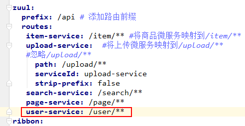
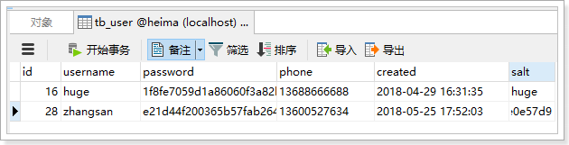

0.学习目标
- 独立创建用户中心
- 了解面向接口开发方式
- 实现数据校验功能
- 实现短信发送功能
- 实现注册功能
- 实现根据用户名和密码查询用户功能
1.创建用户中心
用户搜索到自己心仪的商品，接下来就要去购买，但是购买必须先登录。所以接下来我们编写用户中心，实现用户的登录和注册功能。
用户中心的提供的服务：
- 用户的注册
- 用户登录
- 用户个人信息管理
- 用户地址管理
- 用户收藏管理
- 我的订单
- 优惠券管理
这里我们暂时先实现基本的：注册和登录功能，其它功能大家可以自行补充完整。
因为用户中心的服务其它微服务也会调用，因此这里我们做聚合。
ly-user：父工程，包含2个子工程：
- ly-user-interface：实体及接口
- ly-user-service：业务和服务
1.1.创建父module
创建
1.2.创建子工程ly-user-interface
在leyou-user下，创建module：
位置：
pom：
1 |
|
1.3.创建子工程ly-user-service
创建module
位置

pom
1 |
|
启动类
1 |
|
配置：
1 | server: |
父工程lyeyou-user的pom：
1 |
|
1.4.添加网关路由
我们修改ly-gateway，添加路由规则，对ly-user-service进行路由:

2.后台功能准备
2.1.接口文档
整个用户中心的开发，我们将模拟公司内面向接口的开发。
现在假设项目经理已经设计好了接口文档，详见：《用户中心接口说明.md》

我们将根据文档直接编写后台功能，不关心页面实现。
2.2.数据结构
1 | CREATE TABLE `tb_user` ( |
数据结构比较简单，因为根据用户名查询的频率较高，所以我们给用户名创建了索引
2.3.基本代码

2.3.1.实体类
1 | (name = "tb_user") |
注意：为了安全考虑。这里对password和salt添加了注解@JsonIgnore，这样在json序列化时，就不会把password和salt返回。
2.3.2.mapper
1 | public interface UserMapper extends Mapper<User> { |
2.3.3.Service
1 |
|
2.3.4.controller
1 |
|
3.数据验证功能
3.1.接口说明
实现用户数据的校验，主要包括对：手机号、用户名的唯一性校验。
接口路径：
1 | GET /check/{data}/{type} |
参数说明：
| 参数 | 说明 | 是否必须 | 数据类型 | 默认值 |
|---|---|---|---|---|
| data | 要校验的数据 | 是 | String | 无 |
| type | 要校验的数据类型：1，用户名；2，手机； | 否 | Integer | 1 |
返回结果：
返回布尔类型结果：
- true：可用
- false：不可用
状态码：
- 200：校验成功
- 400：参数有误
- 500：服务器内部异常
3.2.controller
因为有了接口，我们可以不关心页面，所有需要的东西都一清二楚：
- 请求方式：GET
- 请求路径：/check/{data}/{type}
- 请求参数：param,type
- 返回结果：true或false
1 |
|
3.3.Service
1 |
|
3.4.测试
我们在数据库插入一条假数据：

然后在浏览器调用接口，测试：


4.发送短信功能
短信微服务已经准备好，我们就可以继续编写用户中心接口了。
4.1.接口说明

这里的业务逻辑是这样的：
- 1）我们接收页面发送来的手机号码
- 2）生成一个随机验证码
- 3）将验证码保存在服务端
- 4）发送短信，将验证码发送到用户手机
那么问题来了：验证码保存在哪里呢？
验证码有一定有效期，一般是5分钟，我们可以利用Redis的过期机制来保存。
4.2.UserController
ly-user中ly-user-service的web中
1 | /** |
4.3.UserService
ly-user中ly-user-service的service中
这里的逻辑会稍微复杂：
- 生成随机验证码
- 将验证码保存到Redis中，用来在注册的时候验证
- 发送验证码到
ly-sm服务，发送短信
因此，我们需要引入Redis和AMQP：
1 | <dependency> |
添加RabbitMQ和Redis配置：
1 | spring: |
另外还要用到工具类，生成6位随机码，这个我们封装到了leyou-common中，因此需要引入依赖：
1 | <dependency> |
生成随机码的工具：ly-common中的工具类NumberUtils方法generateCode
1 | /** |
Service代码：
1 |
|
注意：要设置短信验证码在Redis的缓存时间为5分钟
4.4.测试
通过RestClient发送请求试试：

查看Redis中的数据：

查看短信：

5.注册功能
5.1.接口说明

5.2.UserController
ly-user中ly-user-server的web：
1 |
|
5.3.UserService
ly-user中ly-user-server的service：
基本逻辑：
- 1）校验短信验证码
- 2）生成盐
- 3）对密码加密
- 4）写入数据库
- 5）删除Redis中的验证码
1 | public void register(User user, String code) { |
5.4.测试
我们通过RestClient测试：

查看数据库：

5.5.服务端数据校验
刚才虽然实现了注册，但是服务端并没有进行数据校验，而前端的校验是很容易被有心人绕过的。所以我们必须在后台添加数据校验功能：
我们这里会使用Hibernate-Validator框架完成数据校验：
而SpringBoot的web启动器中已经集成了相关依赖：

5.5.1.什么是Hibernate Validator
Hibernate Validator是Hibernate提供的一个开源框架，使用注解方式非常方便的实现服务端的数据校验。
官网：http://hibernate.org/validator/

hibernate Validator 是 Bean Validation 的参考实现 。
Hibernate Validator 提供了 JSR 303 规范中所有内置 constraint（约束） 的实现，除此之外还有一些附加的 constraint。
在日常开发中，Hibernate Validator经常用来验证bean的字段，基于注解，方便快捷高效。
5.5.2.Bean校验的注解
常用注解如下：
| Constraint | 详细信息 |
|---|---|
| @Valid | 被注释的元素是一个对象，需要检查此对象的所有字段值 |
| @Null | 被注释的元素必须为 null |
| @NotNull | 被注释的元素必须不为 null |
| @AssertTrue | 被注释的元素必须为 true |
| @AssertFalse | 被注释的元素必须为 false |
| @Min(value) | 被注释的元素必须是一个数字，其值必须大于等于指定的最小值 |
| @Max(value) | 被注释的元素必须是一个数字，其值必须小于等于指定的最大值 |
| @DecimalMin(value) | 被注释的元素必须是一个数字，其值必须大于等于指定的最小值 |
| @DecimalMax(value) | 被注释的元素必须是一个数字，其值必须小于等于指定的最大值 |
| @Size(max, min) | 被注释的元素的大小必须在指定的范围内 |
| @Digits (integer, fraction) | 被注释的元素必须是一个数字，其值必须在可接受的范围内 |
| @Past | 被注释的元素必须是一个过去的日期 |
| @Future | 被注释的元素必须是一个将来的日期 |
| @Pattern(value) | 被注释的元素必须符合指定的正则表达式 |
| 被注释的元素必须是电子邮箱地址 | |
| @Length | 被注释的字符串的大小必须在指定的范围内 |
| @NotEmpty | 被注释的字符串的必须非空 |
| @Range | 被注释的元素必须在合适的范围内 |
| @NotBlank | 被注释的字符串的必须非空 |
| @URL(protocol=,host=, port=,regexp=, flags=) | 被注释的字符串必须是一个有效的url |
| @CreditCardNumber | 被注释的字符串必须通过Luhn校验算法，银行卡，信用卡等号码一般都用Luhn计算合法性 |
5.5.3.给User添加校验
我们在ly-user-interface中添加Hibernate-Validator依赖：
1 | <dependency> |
我们在User对象的部分属性上添加注解：
1 | (name = "tb_user") |
5.5.4.在controller上进行控制
在controller中只需要给User添加 @Valid注解即可。

5.5.5.测试
我们故意填错：

然后SpringMVC会自动返回错误信息：

6.根据用户名和密码查询用户
6.1.接口说明
功能说明
查询功能，根据参数中的用户名和密码查询指定用户
接口路径
1 | GET /query |
参数说明：
form表单格式
| 参数 | 说明 | 是否必须 | 数据类型 | 默认值 |
|---|---|---|---|---|
| username | 用户名，格式为4~30位字母、数字、下划线 | 是 | String | 无 |
| password | 用户密码，格式为4~30位字母、数字、下划线 | 是 | String | 无 |
返回结果：
用户的json格式数据
1 | { |
状态码：
- 200：注册成功
- 400：用户名或密码错误
- 500：服务器内部异常，注册失败
6.2.UserController
ly-user —— ly-user-service————web中
1 | /** |
6.3.UserService
ly-user —— ly-user-service————service中
1 | public User queryUser(String username, String password) { |
要注意，查询时也要对密码进行加密后判断是否一致。
6.4.测试
我们通过RestClient测试：

7.在注册页进行测试
在注册页填写信息：

提交发现页面自动跳转到了登录页，查看数据库：